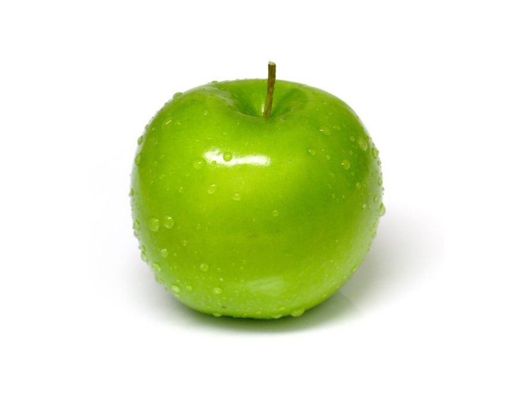

วันแม่แห่งชาติ👸💗
สิ่งที่อยากบอกแม่
แม่ของฉัน เกิดวันที่ 3 สิงหาคม อายุ 34 ปี ทุกๆเช้าแม่จะขับรถมาส่งฉัน ทำกับข้าวทุกๆเช้าให้ฉันทานก่อนๆไปโรงเรียน แม่เป็นคนใจดีมากใจดีกับเพื่อนๆของฉันด้วย และจะถามเสมอว่าฉันเรียนเป็นอย่างไร เหนื่อยไหม หรือเจอเรื่องอะไรที่โรงเรียนแม่ก็จะให้ฉันเล่าให้แม่ฟัง ตอนเด็กๆตอนฉันอยู่ในท้องแม่บอกว่าฉันดื้อมาก ฉันชอบถีบท้องแม่ แต่แม่ไม่เคยโกรธฉันและเอ็นดูฉันเสมอ มีครั้งหนึ่งตอนฉันไปเข้าค่ายลูกเสือ ฉันไม่อยากกินไข่ปิ้ง แม่ฉันทราบเรื่องก็เลยแอบซื้อไข่ปิ้งมาให้ฉันที่ค่ายลูกเสือ แม่บอกว่ากลัวฉันหิวตอนกลางคืน ฉันดีใจมากที่มีแม่ใจดีแบบนี้ ต่อไปนี้ผมจะตั้งใจเรียน จะไม่เอาแต่เล่น ไม่คิดถึงแต่ตัวเอง ผมอาจเคยทำตัวไม่ดีใส่แม่ ทะเลาะกับแม่ พูดไม่เพราะเอาแต่ใจ ผมจะปรับตัวเองให้เป็นคนดียิ่งขึ้น และจะรักแม่ตลอดไป เชื่อฟังแม่มากขึ้น ถึงมจะแอบมีแฟนแม้แม่จะห้ามผมก็จะกระทำตัวใหม่ ไม่ให้แม่เป็นห่วง ผมรักแม่ที่สุดในโลกเลยครับ